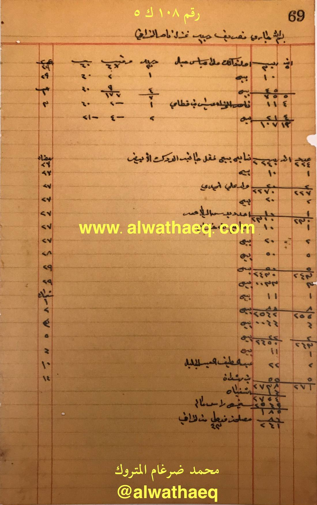
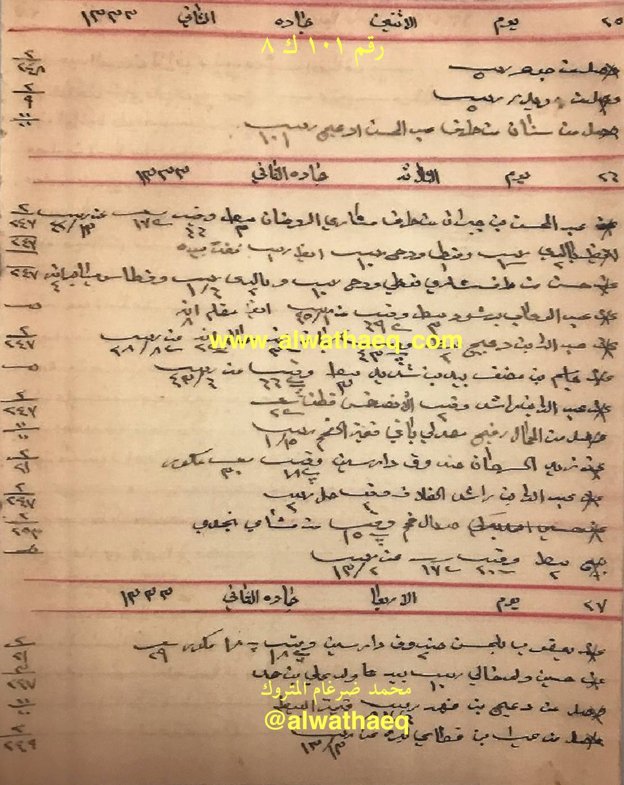

1912 to 1915 · Account statements of the Kuwaiti merchant Mohammed bin Abdullah Al-Matrook
Eissa bin Qatami, the navigator, in the Al-Matrook ledgers
What it is
Eissa bin Qatami is named in eight ledgers between 1912 and 1915. In a 1915 account he pays one lira, valued at 13 rupees and 13 annas.
Why it matters
Contemporary records of Eissa Abdulwahab Al-Qatami, author of the navigation book on sailing by the stars, trading in Kuwait during his lifetime.
Who is meant
Confirmed by the family: Eissa bin Qatami in Kuwait records of this period is Eissa bin Abdulwahab, the navigator (1870 to 1929).
Page copies




Original text
English translation
Notes
Typed extracts as published by Alwathaeq. All five ledgers that name him are saved in the family Drive.
Sources
Alwathaeq (alwathaeq.com): the ledgers and letters of the Kuwaiti merchant Mohammed bin Abdullah Al-Matrook, with commentary by Mohammed Dhurgham Al-Matrook. Scans as published by Alwathaeq.
Archive reference
- Document 101, book 8 · 1915
- Document 108, book 5 · 1914
How this text was made: Arabic extracts as published by Alwathaeq. English translation by Claude; please review.
Open in the interactive site